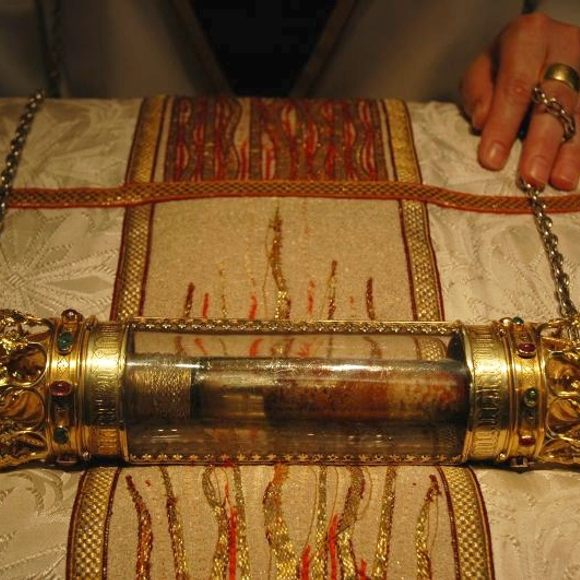

style="color:blue; font-family:Lobster">See also Matthew 1:18 and Hebrews 10:5. Christ's blood would have been sinless since it came to him through his father, God, rather than his natural mother, Mary. Consequently, Jesus' bloodline was perfectly pure and untainted by the effects of Adam's sin.
credits to got questions